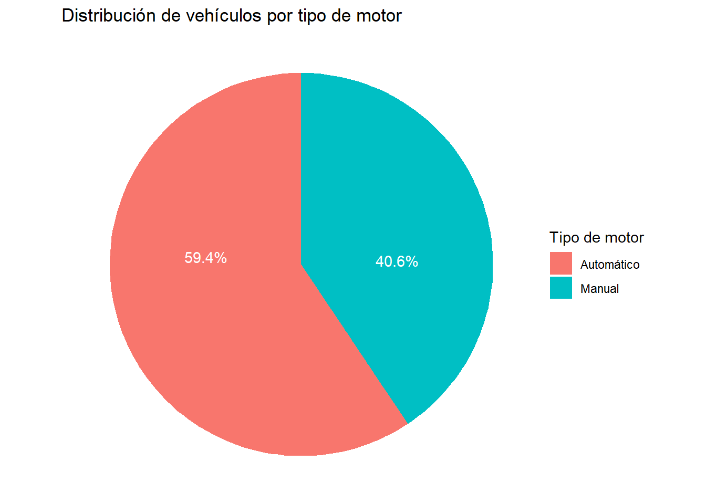

library(tidyverse)
library(plotly)
library(DT)
library(scales)
library(ggthemes)
library(hrbrthemes)
library(ggplot2)
library(dplyr)
library(forcats)Gráficos Interactivos
Creación de gráficos interactivos

Carga de librerias necesarias para el desarrollo de la graficación
Gráfico de dispersón del conjunto de datos “trees”
Para este gráfico de dispersión se hace una relación entre las variables altura y volumen de los árboles para determinar su relación.
En el gráfico se puede observar una relación donde mayor sea la altura del árbol así aumenta el volumen de madera, lo cual tiene sentido en relación con un incremento proporcional, aunque se debería conocer la especie del árbol para tener un panorama más claro, ya que con esto se tiene el tiempo de crecimiento del árbol, la densidad, el diámetro usual, etc.
Arboles <-
trees |>
ggplot(aes(x = Height, y = Volume, color = Girth)) +
geom_point(aes(
# datos que se muestran al colocar el ratón sobre un punto
text = paste0(
"Altura del Árbol : ", Height, "\n",
"Volumen del Árbol : ", Volume, "\n",
"Circunferencia: ", Girth
)
)) +
scale_x_continuous(labels = comma, limits = c(0, NA)) +
scale_y_continuous(labels = comma, limits = c(0, NA)) +
ggtitle("Relación entre altura y volumen de los árboles") +
xlab("Altura del Árbol") +
ylab("Volumen del Árbol") +
labs(caption = "Fuentes: Atkinson, A. C. (1985) Plots, Transformations and Regression. Oxford University Press.",
color = "Circunferencia") +
labs(color = "Altura estimada") +
theme_economist()
# Gráfico plotly
ggplotly(Arboles, tooltip = "text") |>
config(locale = 'es') # para mostrar los controles en españolGráfico de barras del conjunto de datos mtcars
Cantidad de vehículos con el tipo de motor en V o líneal
Para este gráfico se utilizo la base de datos “mtcars”. Esta base de datos tiene 32 filas/observaciones y 11 columnas/variables, la misma presenta el consumo de combustible de los vehículos estudiados (población) y 10 aspectos del diseño y rendimiento de 32 automóviles, modelos 1973-1974.
Para el ploteo de este gráfico se utilizó la variable de tipo de motor que se categoriza en dos factores, motor de tipo en forma de V, que se relaciona la disposición de los cilindros que se agrupan en dos bloques o filas de cilindros, colocados de manera que forman una letra “V”, en el caso del motor en línea los cilindros se disponen consecutivamente.
# Se procede a generar la variable "Tipo_motor" la transmisión del vehículo
mtcars <- mtcars |>
mutate(vs = ifelse(am == 0, "motor en v", "motor en línea"))
# Crear el gráfico de barras
Tipo_motor_plot <- mtcars |>
ggplot(aes(x = fct_rev(fct_infreq(vs)), fill = vs)) +
geom_bar(
aes(
text = paste0(
"Número de vehículos: ", after_stat(count)
)
)
) +
scale_fill_manual(values = c("motor en v" = "#0ca3b4", "motor en línea" = "#f76ccf")) +
ggtitle("Vehículos por tipo de motor") +
xlab("Tipo de motor") +
ylab("Número de vehículos") +
labs(caption = "Fuente: mtcars dataset") +
labs(fill = "Tipo de Motor") +
theme_light() +
theme(legend.title = element_blank())
# Convertir a gráfico interactivo con plotly
Grafico_interactivo_tipo_motor <- ggplotly(Tipo_motor_plot, tooltip = "text") |>
config(locale = 'es')
Grafico_interactivo_tipo_motorPodemos denotar en los datos del gráfico, que hay una mayor proporción de vehículos con motor tipo en V que motores en línea. Se puede observar que la cantidad de vehículos con motor tipo V son 18 y en línea 14.
Gráfico de pastel
Gráfico según el tipo de motor; datos de mtcars
Igualmente con la base de datos mtcars y utilizando la variable categórica de tipo de motor (motor tipo manual y motor tipo automático), se presenta el siguiente gráfico de pastel, donde al contrario del gráfico de barras este si nos muestra el número de la distribución de vehículos según su categoría de motor.
# Crear la variable Tipo_motor en función de la transmisión
mtcars <- mtcars |>
mutate(Tipo_motor = ifelse(am == 0, "Automático", "Manual"))
# Ahora se debe agrupar y resumir los datos contando los vehículos por tipo de motor
conteo_vehiculos_por_tipo <- mtcars |>
group_by(Tipo_motor) |>
summarise(Total_Vehiculos = n())
# Se calcula los porcentajes para poder tenerlo en % y gráficar
porcentaje_vehiculos_por_tipo <- conteo_vehiculos_por_tipo |>
mutate(Porcentaje = round(Total_Vehiculos / sum(Total_Vehiculos) * 100, 1))
# Generación del gráfico de pastel
grafico_pastel_ggplot2 <-
porcentaje_vehiculos_por_tipo |>
ggplot(aes(x = "", y = Total_Vehiculos, fill = Tipo_motor)) +
geom_bar(width = 1, stat = "identity") +
coord_polar(theta = "y") +
geom_text(
aes(label = paste0(Porcentaje, "%")),
color = "#ffffff",
position = position_stack(vjust = 0.6) # para ajustar la posición del texto en cada porción
) +
labs(
title = "Distribución de vehículos por tipo de motor",
x = NULL,
y = NULL,
fill = "Tipo de motor"
) +
theme_void()
# Despliegue del gráfico
grafico_pastel_ggplot2
Histograma de cantidad de sismos por magnitud
Datos correpondientes a “Locations of Earthquakes off Fiji”
Para desarrollar el histograma se procedió a utilizar la base de datos “quakes” que es una base de datos de ubicación de los terremotos en Fiji que proporciona la ubicación de 1000 eventos sísmicos de Magnitud > 4,0. Los eventos ocurrieron en un cubo cerca de Fiji desde 1964.
# Crear el histograma con los datos de quakes
histograma_ggplot2 <-
quakes |>
ggplot(aes(x = mag)) +
geom_histogram(
aes(
text = paste0(
"Magnitud (valor medio del rango): ", round(after_stat(x), 2), "\n",
"Frecuencia: ", after_stat(count)
)
),
bins = 10
) +
ggtitle("Distribución de la magnitud de los terremotos") +
xlab("Magnitud del terremoto") +
ylab("Frecuencia") +
labs(subtitle = "Datos de terremotos en el dataset 'quakes'", caption = "Fuente: 'quakes' dataset") +
theme_classic()
# Histograma interactivo con plotly
ggplotly(histograma_ggplot2, tooltip = "text") |>
config(locale = 'es')En principio el histograma nos da una visión clara de la distribución, tendencias, y patrones en un conjunto de datos, para este caso vemos que hay una distribución de los datos de manera asimétrica con una tendencia de acumulación hacia la izquierda, lo cual nos dice que la mayor cantidad de sismos están concentrados entre la magnitud de 4 a 5 grados, a su vez, se tiene una cantidad muy baja en la magnitud de 6.5 grados.
La importancia de los gráficos
Es una herramienta muy eficaz, ya que un buen gráfico: capta la atención del lector; • presenta la información de forma sencilla, clara y precisa; • no induce a error; • facilita la comparación de datos y destaca las tendencias y las diferencias; • ilustra el mensaje, tema o trama del texto al que acompaña.
(INE, 2024)
Referencias
- Instituto Nacional de Estadística (INE). España.(2024). Los tipos de gráficos estadísticos. https://www.ine.es/explica/docs/pasos_tipos_graficos.pdf